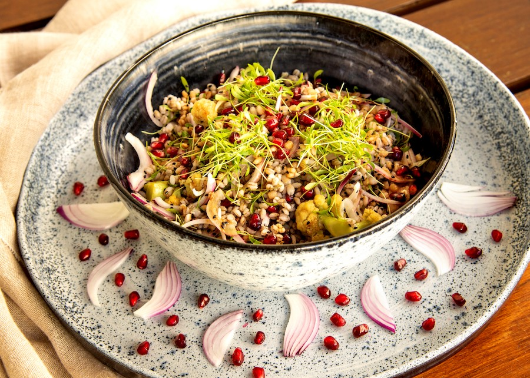

Chegou a hora de você experimentar essa guloseima!

Ingredientes:
- 4 litros de água
- 1 colher (sopa) (13 g) de sal
- 2 xícaras (370 g) de cevadinha
- 3 colheres (sopa) (45 ml) de azeite de oliva
- 1 couve-flor pequena (500 g), higienizada
- 2 cebolas-roxas (300 g)
- 1/2 xícara (120 ml) de vinagre de framboesa, de xerez ou outro
- 1 maço de cebolinha (100 g), picada
Molho(opcional):
- 1/2 colher (chá) (2 g) de açúcar
- 1 colher (sopa) (15 ml) de vinagre de framboesa ou suco de limão
- 1/2 colher (chá) (1 g) de garam masala ou cominho em pó
- 1/8 de colher (chá) (1 g) de pimenta-do-reino preta moída na hora
Todos os direitos reservados © Victor Varjão - Théo Alves - Sara Duarte